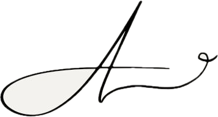

Here’s where I’ve poured my time, energy, and care — from supporting neurodiverse youth to developing meaningful, people-centered design skills.
I spent 2 years supporting neurodiverse clients as an RBT, where I learned the value of active listening, emotional intelligence, and adaptive problem-solving.
I’ve worked with clients to edit and produce personal YouTube vlogs and private video content. While the work is confidential, it involved everything from audio cleanup to visual storytelling and stylized transitions.
🕊️ Due to privacy agreements, these videos are not publicly shared.
🌸 I also build digital side projects — wellness apps, interactive web spaces, and cozy corners of the internet. Click here to explore them!
with purpose,
